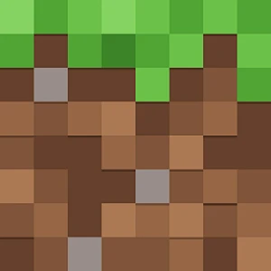
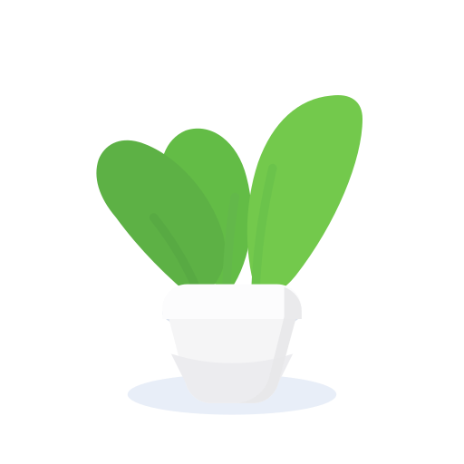

← 所有项目

Minecraft Mod
所有人为冒险加一点新乐趣
有 5 个文件还没发布发布更新发布新版本打开文件夹
项目介绍✎ 编辑介绍
Minecraft Mod
记录模组想法、玩法和安装说明。
问题1
看看大家的反馈
查看问题 →
查看问题 →
历史版本查看全部 →
修复窗口缩放问题· 修改了 5 个文件
不用学命令行，也不用安装 Git。选择项目文件夹、写一句更新说明，就能发布源码；还可以单独发布带介绍和下载文件的新版本。没准备好账号，就先在演示模式里体验。


为冒险加一点新乐趣
有 5 个文件还没发布记录模组想法、玩法和安装说明。
add、commit、merge、rebase，一连串概念；一个报错信息就足以让人卡住，更不敢随便按回车。
GitHub Desktop 聚焦提交与分支，默认你理解仓库、暂存区；也不集中处理问题、项目下载这些日常操作。
看项目、下载 ZIP、回复问题、查历史版本，要在浏览器多个页面来回跳，下载断了也不知道进度。
未登录时可用模拟数据体验新建项目、源码更新、新版本发布与问题回复，数据只存在于当前窗口；登录后连接真实 GitHub 项目，访问令牌保存在 Windows 凭证管理器，全程直连、无自有服务器。
不登录也能新建项目、发布更新、回复问题，只修改窗口内的演示数据并在重启后复原；登录后同样的界面操作真实 GitHub，先试后用不慌张。
选择任意文件夹即可识别为项目；独立 Worker 扫描新增、修改、删除、重命名的文件，遵守 .gitignore、避开依赖目录，变化时防抖复检。基于 isomorphic-git，无需安装 Git。
发布前先检查云端：可安全衔接的更新自动先获取；双方改动同一文件时，双版本预览、逐个选择保留版本。复杂历史会阻止自动发布，绝不强制覆盖。
创建问题、回复评论、关闭与重新打开；问题列表按项目分组，从全局进入默认收起、从项目详情进入自动展开对应项目。
正式版、Alpha、Beta 三种类型，自动建议并续号版本名；可插入链接与图片、选择多个下载文件，按 GitHub 公开限制校验（单文件小于 2 GiB、每版最多 1000 个、不可同名），随后真实创建 Release、逐个上传附件，已完成端到端验收。
一键统一翻译项目简介、README、问题与 Release 描述；README 按段落随滚动逐步翻译。私有项目不发送给第三方，项目名、版本号、文件名以占位符保护，译文本地缓存。
在“发现 / 搜索”里浏览近期活跃、受关注的公开项目。EasyHub 结合 Star 数、近期活动和更新时间排列结果，帮你从更多作品里找到感兴趣的项目。
这是 EasyHub 自己的热门排序，不是 GitHub 官方 Trending。右侧项目仅为界面示例，实际内容从 GitHub 获取。
不需要命令行，也不需要事先理解分支、暂存区等概念。
添加电脑上已有的文件夹并识别为项目，或把 GitHub 上的云端项目下载到指定位置。
独立 Worker 扫描文件的新增、修改与删除，遵守 .gitignore 并避开常见依赖目录。
用一句话说明本次更新；若云端也有改动，逐文件对比并选择要保留的版本。
自动先拉取可衔接的远端更新，再把本地改动安全同步到 GitHub，完成后可查看历史版本。
大多数 GitHub 工具默认你已经懂 Git。EasyHub 从第一次接触 GitHub 的人的视角出发：把操作做少、把话说直白、让新手不登录也能先练手。
| 项目 | 平台内容浏览 | Issues 管理 | Release | 本地源码发布 | 免安装 Git | 中文与翻译 | 开源 | 面向新手 |
|---|---|---|---|---|---|---|---|---|
| EasyHub本项目 · Windows | ||||||||
| GitHub DesktopGitHub 官方 | ||||||||
| OctoPunk闭源 · 尚未发布 | ||||||||
| DevHubAGPL · 桌面/移动 | ||||||||
| Gitify菜单栏通知 | ||||||||
| ForkHubAndroid 客户端 |
内置演示数据，走通新建项目、选择文件夹、模拟修改、发布更新、查看历史版本；包含 Markdown 介绍编辑与仿 GitHub 的危险区操作。
OAuth 设备授权登录，支持真实项目列表、README、问题创建与回复、历史版本，以及项目 ZIP 下载，下载通知显示速度与预计剩余时间、可取消。
文件夹识别、Worker 扫描文件变化、GitEngine 发布源码。2026-09-24 经用户授权，对新建的私有测试仓库完成真实创建、源码发布与重新下载验收。
发布前检查云端：可衔接的更新自动先获取；同一文件双方改动时提供双版本预览、逐文件确认；分叉历史阻止自动同步，不默认强制上传。
项目所有者可填写版本号与介绍，插入图片和链接、上传多个附件并预览；发布到 GitHub 后可在应用内选择下载。真实发布与下载流程已在测试项目验收。
手机端提供登录、项目、介绍、问题与回复、历史版本、ZIP 下载与新建项目，手机 UI 单独设计。
选择适合自己的版本，直接从 GitHub 下载。三者都无需安装 Git：
安装包目前只从 GitHub 官方下载，没有国内备用线路。也可以到 GitHub 发布页选择文件；这仍使用 GitHub 下载线路。
如果从其他地方取得安装包，请核对 SHA-256：
ad5ed390c6d174c2bd931282333d70f28718b4e861ea8cffb6e38b598e978bc68a0191995cf62c23140f051f5cffa9ad15a01943bd336fda2569de3e6198f505c97613a72120a1205ca6b650521d4140f163dff0f306253e4ff06111949d063d仅提供 Windows x64；尚未使用商业代码签名，首次运行可能提示“未知发布者”。
环境要求：
# 安装依赖并启动
pnpm install
pnpm dev
现有 72 项单元测试与界面点击测试，交付前可完整检查：
pnpm typecheck pnpm lint pnpm test pnpm build
界面冒烟测试运行 pnpm test:ui。
当前版本 v1.0.1 · 功能范围与构建方式见项目说明